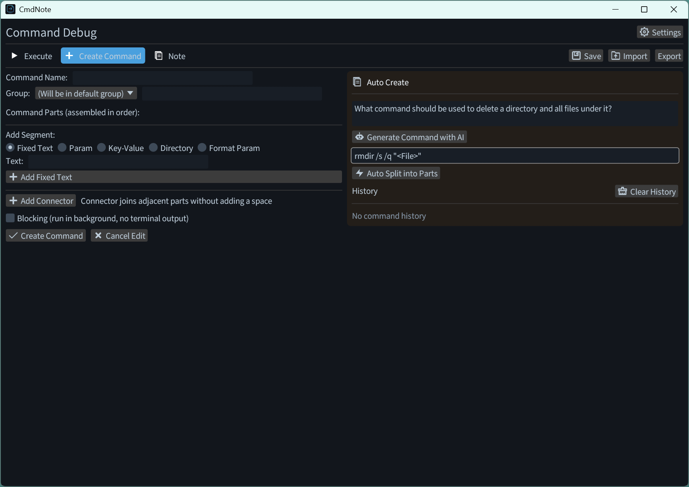
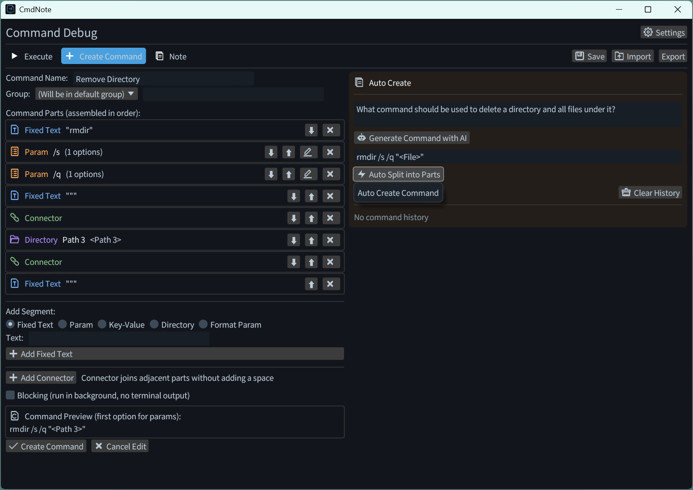
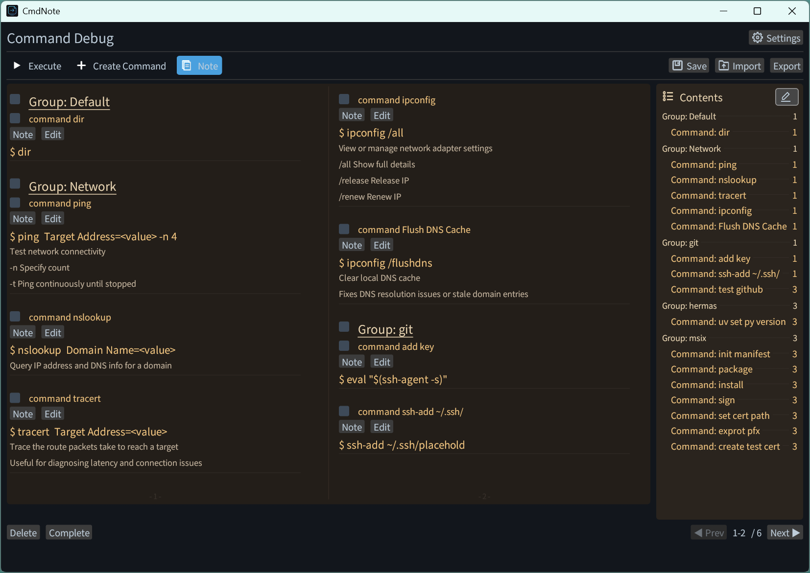
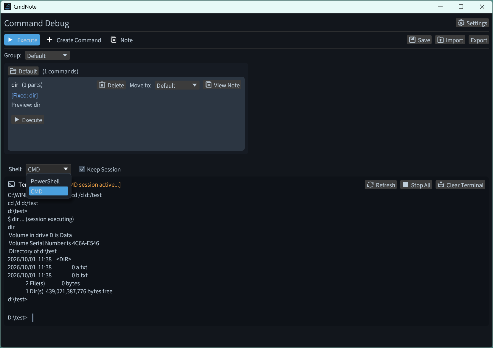
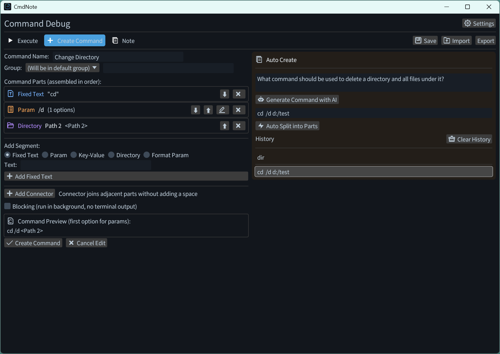
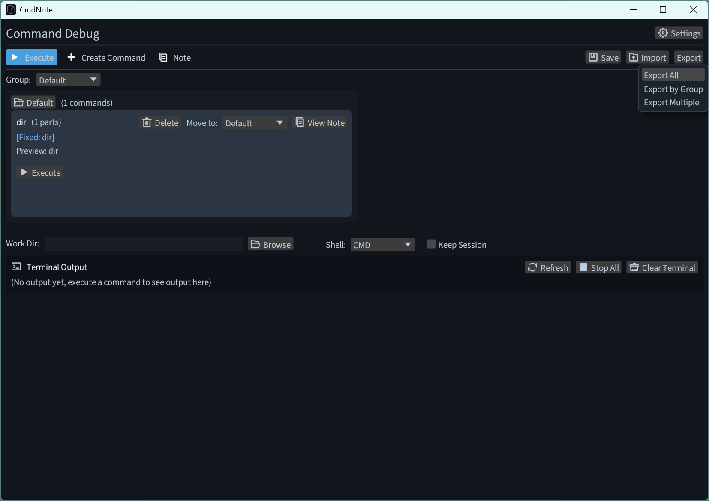

Professional Command Line Debugging Tool
CmdNote helps you easily create, manage and debug command line tasks. Export your commands as JSON templates, share and reuse them effortlessly.
Features
Command Groups
Group commands into custom categories and attach notes to any command — manage them like a notebook.
JSON Import & Export
Plain standard JSON stored locally. Export, import and share command packs, or edit the JSON with any text editor.
Visual Debug Execution
Run commands in the built-in panel with real-time output, or copy them to the native CMD window with one click.
Persistent Sessions
"Keep Session" runs commands continuously: manual input, cd carry-over and arrow-key history recall.
Auto Create Split
Any command line auto-splits in argument order into directories, switches and fixed text, with clickable path pickers.
AI Command Generation
Generate the command line from a one-sentence description. Offline local Ollama by default; OpenAI-compatible services supported.
Usage Guide
Step 1: Create Command Task
Fill in the command parameters in the creation page. You can also describe your need in one sentence, generate the command line with AI, then split it in argument order with Auto Create in one click.


Step 2: Edit Command
Click the edit button on the right to enter editing mode, where you can edit, delete or annotate all commands.

Step 3: Execute Commands
Switch between CMD and PowerShell to run commands. Check "Keep Session" to run commands continuously in the same session, with manual command input supported; leave it unchecked to exit automatically after execution. Click "Stop All" to terminate running commands and end the session.

Step 4: Command History
In "Keep Session" mode, commands you type manually are recorded into the history list. Click a history entry to copy the command, or send it to Auto Create to split it into a structured command quickly.

Step 5: Export JSON File
Use the export button to export a single command, multiple commands or a whole group as a JSON file. The exported format is shown below:

{
"command_tasks": [
{
"id": 0,
"name": "dir",
"parts": [
{
"Fixed": "dir"
},
{
"Dir": {
"key": "directory"
}
},
{
"Param": {
"name": "mode",
"options": [
"/a",
"/w",
"/s"
]
}
}
],
"is_blocking": false,
"group": "Directory",
"note": ""
}
],
"cmd_next_id": 1
}Step 6: Edit Templates
Click the button below to jump to the template library. You can modify the JSON content and download the updated version.
Step 7: Import File to CmdNote
Import the downloaded JSON file into CmdNote to start using your command templates.
Open CmdNote, click the import button, and select your JSON file to load all command templates.
Step 8: Thank You for Using
The software will continue to be updated with new features to make operations more convenient. Thank you for using, and feel free to send your valuable feedback to coulanasaluen@outlook.com.